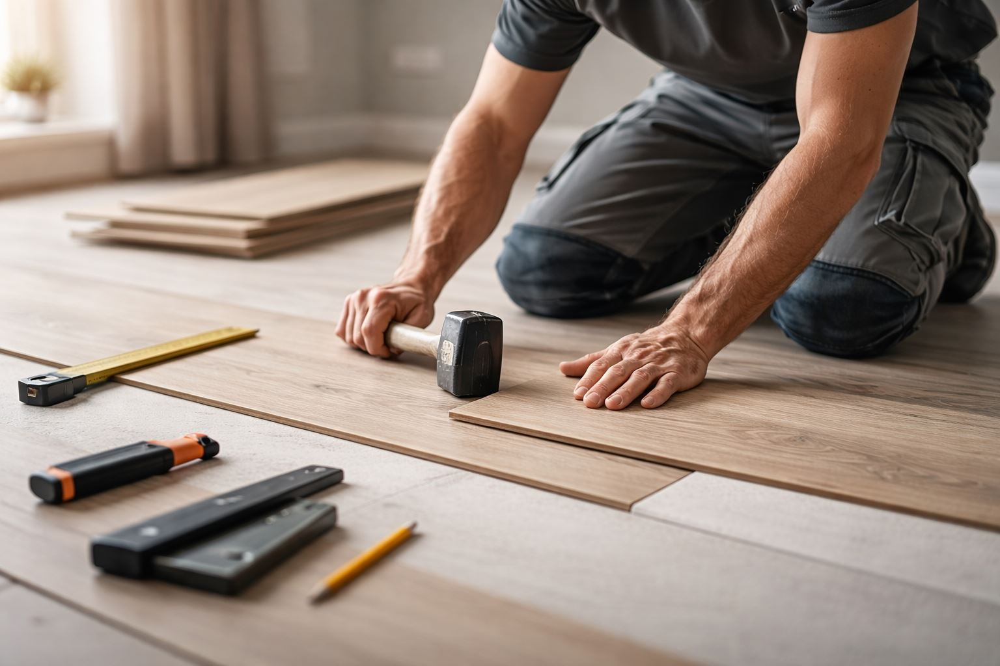
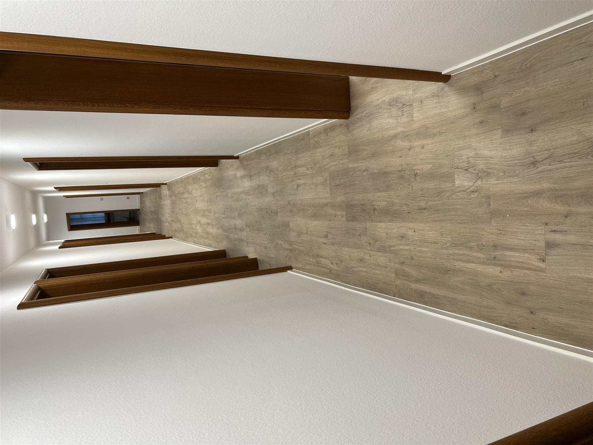
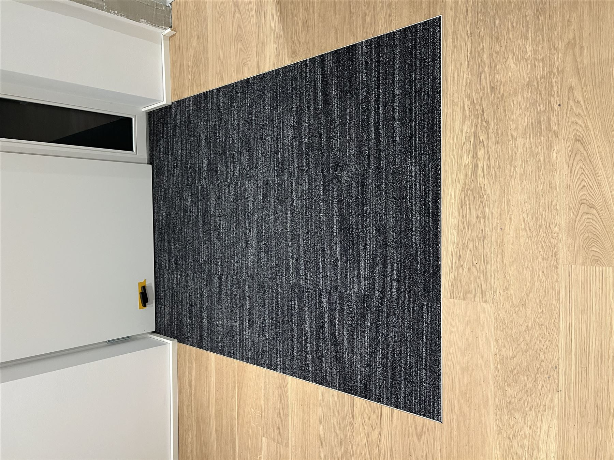
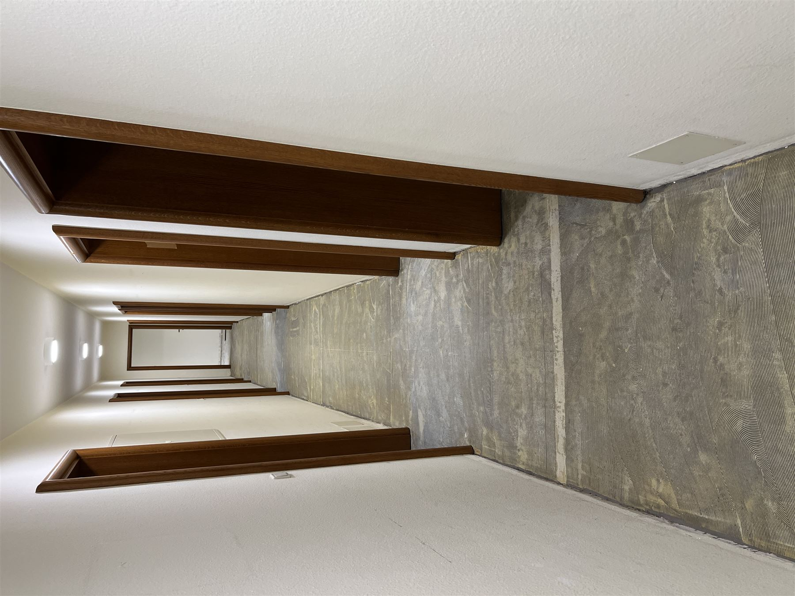
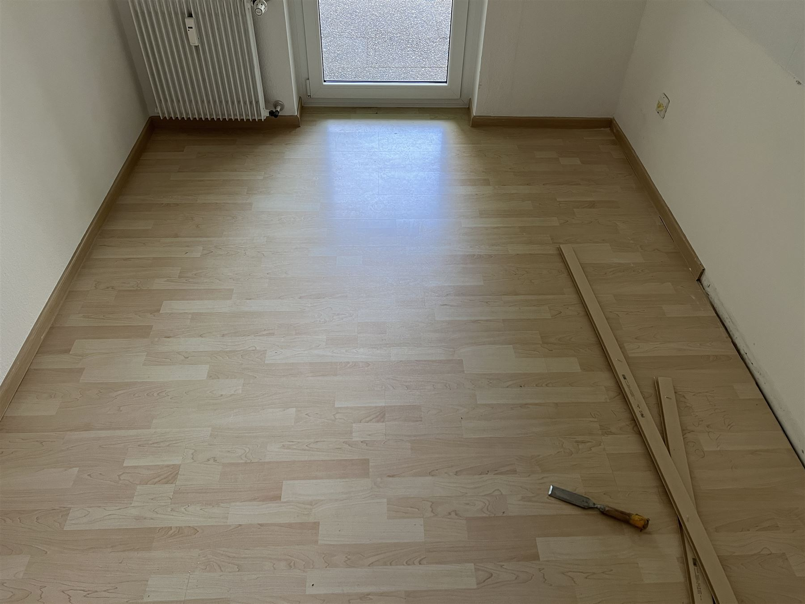

Vinyl, Laminat & Designboden
Passend zum Raum, Untergrund und Alltag. Mit sauberem Aufbau, präziser Verlegung und stimmiger Flächenwirkung.
- Moderne Holz- und Steinoptiken
- Exakte Verlegung mit ruhigem Fugenbild
- Beratung zur richtigen Materialwahl
Saubere Ausführung
Persönliche Betreuung
Klare Kommunikation
Realistische Zeitplanung
Hochwertige Raumwirkung
Ãœber uns
Wir verlegen Böden für Wohnräume und Sanierungen in Würzburg und Umgebung. Wichtig sind für uns nicht nur schöne Materialien, sondern auch ein sauberer Aufbau, ordentliche Übergänge und ein Ergebnis, das im Alltag lange gut funktioniert.



Leistungen
Alle Kernleistungen sind auf ein sauberes, langlebiges und optisch hochwertiges Ergebnis ausgerichtet. Nicht möglichst viel, sondern genau das, was den Raum besser macht.
Passend zum Raum, Untergrund und Alltag. Mit sauberem Aufbau, präziser Verlegung und stimmiger Flächenwirkung.
Gerade diese Details entscheiden darüber, ob ein Projekt durchschnittlich oder hochwertig wirkt. Hier wird der Unterschied sichtbar.
Bestehende Böden müssen nicht immer komplett ersetzt werden. Oft lässt sich mit der richtigen Maßnahme viel Qualität zurückholen.
Projektgalerie
Hier sehen Sie Beispiele aus echten Projekten. So bekommen Sie direkt ein Gefühl dafür, wie Materialien, Verlegung und Detailarbeit im fertigen Raum wirken.
Vinyl · Küche & Flur
Ein Boden muss nicht laut sein, um luxuriös zu wirken. Gute Ausführung zeigt sich in Harmonie, Proportion und Details.
Laminat · Wohnraum
Treppe · Details
Vorher / Nachher
Die Gegenüberstellung zeigt nicht nur neue Materialien, sondern den Unterschied zwischen unfertig und fertig, zwischen Standard und hochwertiger Raumwirkung.
Mehr Ruhe, mehr Wärme, bessere Raumwirkung.

Robuste Nutzung und ein deutlich moderneres Gesamtbild.

Arbeitsweise
Klare Absprachen und ein nachvollziehbarer Ablauf sorgen dafür, dass aus der ersten Anfrage ein ordentlich ausgeführtes Ergebnis wird.
Wir sehen uns den Untergrund, die Nutzung und die gewünschte Optik direkt an. So entsteht kein Standardangebot, sondern eine passende Lösung.
Material, Detailanschlüsse, Übergänge und Zeitrahmen werden nachvollziehbar festgelegt, bevor das Projekt startet.
Verlegt wird mit ruhiger Hand, sauberem Schnittbild und Fokus auf die Details, die den Gesamteindruck tragen.
Warum Kunden uns wählen
Wir arbeiten zuverlässig, erklären verständlich, was sinnvoll ist, und achten auf ein Finish, das auch nach Jahren noch ordentlich aussieht.
Beratung vor Ort ohne versteckte Kosten
Saubere Baustelle und ordentliche Ãœbergabe
Erfahrung aus über 10 Jahren Bodenhandwerk
Häufige Fragen
Das reduziert Unsicherheit und bringt Nutzer schneller zur Kontaktaufnahme.
Wir verlegen Vinyl, Laminat sowie moderne Designböden und beraten vor Ort, welcher Belag für Nutzung, Untergrund und gewünschte Optik am besten passt.
Ja. Die Vor-Ort-Beratung ist kostenlos und hilft dabei, Material, Untergrund und Aufwand realistisch einzuschätzen.
Wir arbeiten in Würzburg und im Umkreis von bis zu 50 Kilometern, je nach Projekt und Abstimmung.
Kontakt
Am schnellsten erreichen Sie uns telefonisch oder per WhatsApp. Wenn Sie lieber schreiben möchten, nutzen Sie einfach das Kontaktformular.